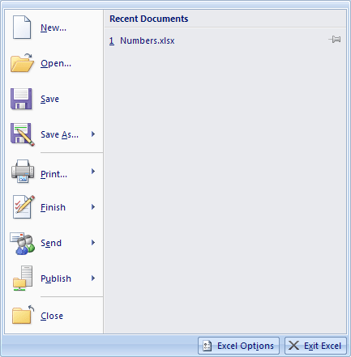
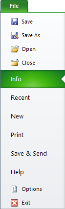
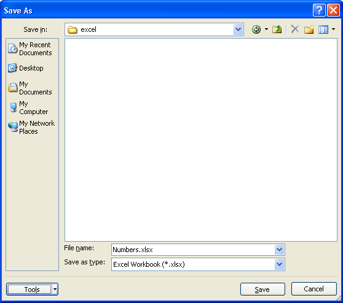
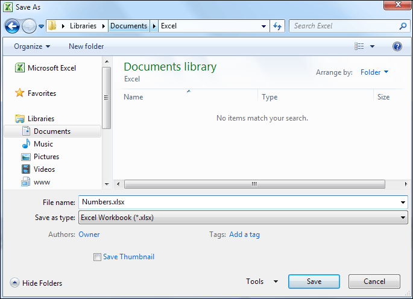
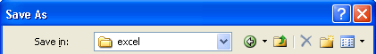
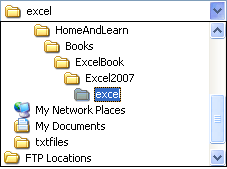
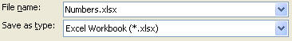

Free
computer Tutorials
|
Free
computer Tutorials
|
|
 HOME HOME
|
|
||||
Microsoft Excel 2007 to 2010How to save your work in ExcelNow that your spreadsheet is coming along nicely, you'll want to save your work. To save your spreadsheet, do the following.
When you click the Office button, you'll see the options list appear:  The Office button used to be a file menu in previous versions of Excel. In Excel 2007, you perform all the File operations by clicking the round Office button. Clicking Close, for example, will close the current Excel spreadsheet, but won't close down Excel itself. To close down Excel, click the "Exit Excel" button in the bottom right of this dialogue box. If you want to open a recent Excel document, click its name under the Recent Documents heading. For Excel 2010 users, you don't have a round Office button. Click the File tab instead to see the menu options as above:  But to save your work, click the Save option. You will then see another
dialogue box appear - Save As. Here it is in Windows XP:  And here's the Save As dialogue box in Windows 7 (Windows Vista is more or less the same):  In the image above, we're saving our Excel spreadsheet to a folder we've created in the Libraries > Documents folder. At the top of the dialogue box in Windows XP, you'll see this:  Save in means "Where would you like to save your spreadsheet?" In the image above, we're saving it to a folder called excel. Notice the blue down-pointing arrow on the Save in drop down list. Click the arrow to reveal more locations:  Choose a new location from the list, if you prefer. The large white rectangle on the Save as dialogue box will then show you all the files already in the location. When you're happy with your file location, type a name for your file
in the area at the bottom of the dialogue box : 
Notice the "Save as Type" box below the file name. The type is a XLSX file, and this is new from Excel 2007. The old ending was XLS. Excel 2007 and 2010 can open older XLS files, but previous versions of Excel can't open XLSX files.) Remember to save you work on a regular basis, by clicking either the round Office button in Excel 2007 or the File menu in Excel 2010. Then click the Save option. A quicker way is to just click the disk icon on the Quick Access Toolbar:
Coming up shortly is a Review, so that you can test your new knowledge of Excel 2007/2010. First though, you'll need to know about currency options. |
|||||
|